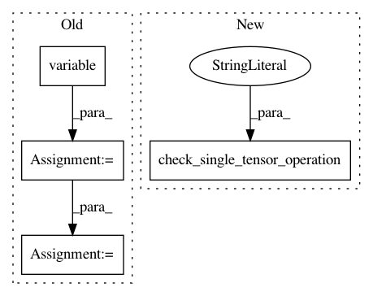

b95fcf7f52aca8ad0b1afb3cfc64c8eed534fafe,tests/keras/backend/backend_test.py,TestBackend,test_repeat_elements,#TestBackend#,270
Before Change
for ndims in [1, 2, 3]:
shape = np.arange(2, 2 + ndims)
arr = np.arange(np.prod(shape)).reshape(shape)
attr_list = [k.variable(arr) for k in BACKENDS]
for rep_axis in range(ndims):
np_rep = np.repeat(arr, reps, axis=rep_axis)
z_list = []
for a, k in zip(attr_list, BACKENDS):
z_list.append(k.eval(k.repeat_elements(a, reps, axis=rep_axis)))
for z in z_list:
assert z.shape == np_rep.shape
assert_allclose(np_rep, z, atol=1e-05)
if hasattr(z, "_keras_shape"):
After Change
for rep_axis in range(ndims):
np_rep = np.repeat(arr, reps, axis=rep_axis)
check_single_tensor_operation("repeat_elements", arr, BACKENDS,
rep=reps, axis=rep_axis,
assert_value_with_ref=np_rep)
// test theano shape inference when
// input shape has None entries
if K.backend() == "theano":
In pattern: SUPERPATTERN
Frequency: 3
Non-data size: 4
Instances
Project Name: keras-team/keras
Commit Name: b95fcf7f52aca8ad0b1afb3cfc64c8eed534fafe
Time: 2017-07-29
Author: me@taehoonlee.com
File Name: tests/keras/backend/backend_test.py
Class Name: TestBackend
Method Name: test_repeat_elements
Project Name: keras-team/keras
Commit Name: b95fcf7f52aca8ad0b1afb3cfc64c8eed534fafe
Time: 2017-07-29
Author: me@taehoonlee.com
File Name: tests/keras/backend/backend_test.py
Class Name: TestBackend
Method Name: test_spatial_2d_padding
Project Name: keras-team/keras
Commit Name: b95fcf7f52aca8ad0b1afb3cfc64c8eed534fafe
Time: 2017-07-29
Author: me@taehoonlee.com
File Name: tests/keras/backend/backend_test.py
Class Name: TestBackend
Method Name: test_tile